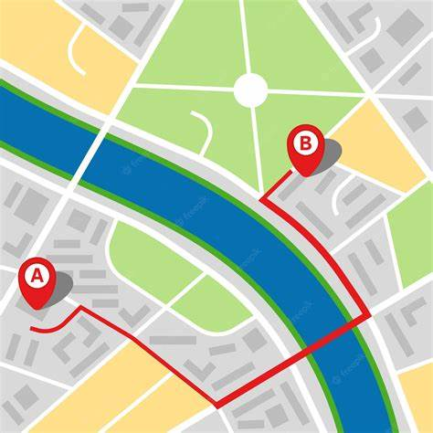

Sigue Tu Ruta
Rastrea y conoce las rutas de autobuses en Tepatitlán
Únete a la comunidad de 5,000+ usuarios
¿Quienes somos?
En Sigue Tu Ruta mejoramos la movilidad en Tepatitlán con tecnología de rastreo en tiempo real para el transporte público. Ofrecemos a los usuarios información precisa sobre ubicaciones y tiempos de llegada, facilitando viajes más seguros, eficientes y sin incertidumbre.
